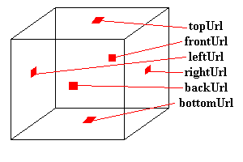

| Over The Hills And Far Away... |
Background
So far, the worlds we have created look OK, but are lacking something in the way of distance. You have an object floating in space, and that's it. OK for some things, but to look good, we need some kind of background. The default background is black, but that's not very nice. Lets do something about it.
There are two ways we can change the background of our scene. One is to specify colours for the background, and the other is to provide images to be mapped onto the background. Both of these are implemented with the Background node. First of all, I'll describe how to add colour to the background of your scene.
The Background node has a number of fields used for background colours. These are:
Background {
MFFloat groundAngle []
MFColor groundColor []
MFFloat skyAngle []
MFColor skyColor [0 0 0]
}
Just a quick note about the format of the node definitions. Up until now, I've been showing you examples of the nodes with value in place, which is how you would actually use it. From now on, however, I'm going to give the actual definition of the fields. This is the field name, the type, and the default value. You still use the nodes in the same way (as shown in the example a little further down), but I'm giving you a little more information. If you've read the Techy Stuff tutorial, you'll understand what's going on.
Right, we can carry on now... The default values are shown above. The default is a single skyColor of 0 0 0, black. skyColor is a list of SFColor values, corresponding to the sequence of colours to be displayed on the background, from the point directly above, downwards. So, the first value is displayed above, and the next is displayed below that, and so on. skyAngle is the angle (down from the top) that each band of colour will be displayed at. The first colour is automatically displayed at an angle of 0 (straight up), so you don't need to include that one. Therefore, there will always be one fewer angles than colours. The browser interpolates between the colours on the background, so you get a smooth blending effect. For instance, the following code would give a mix between red (straight up), green (45 degrees up), and blue (straight ahead).
Background {
skyColor [1 0 0, 0 1 0, 0 0 1]
skyAngle [0.78, 1.57]
}
This will appear as shown in this example and code.
The groundColor and groundAngle have the same effect as above, but an angle of 0 corresponds to straight down, instead of straight up. To have a single colour as background, simply specify a single skyColor and nothing else. To get a sharp horizon, you need to use both groundColor and skyColor, otherwise if you only use one, it interpolates between the colours.
Panoramas
There is another way to provide a background for your world. This is to provide a number of textures to be mapped onto a cube around the world. This cube is always centred on the viewer, so the viewer can never approach it, no matter how far they move. This is done with six other fields in the Background node. These specify six urls of images to be mapped onto the cube as shown below.
Background {
MFString backUrl []
MFString bottomUrl []
MFString frontUrl []
MFString leftUrl []
MFString rightUrl []
MFString topUrl []
}

If you specify images with transparency in them, the background colour specified with the fields previously described will show through. Normally, if you don't have transparency, you shouldn't specify background colours, as it will slow down the browser.
Fog
If you want a fog effect, VRML can do that too! You simply have to include a Fog node in your file, and there you go! Objects in the distance will then be obscured by the fog, and appear out of it as they approach. The syntax of a Fog node is as follows:
Fog {
SFColor color 1 1 1
SFString fogType "LINEAR"
SFFloat visibilityRange 0
}
The color field specifies the color, so you can have fog, smog, smoke, or a red mist or something equally weird. type is the type of fog, which governs how quickly objects fade into the fog. There are two options here: "LINEAR" and "EXPONENTIAL". "LINEAR" gives a linear fade into the fog, and "EXPONENTIAL" give more exponential blending, giving a more natural fog appearance. The final node is visibilityRange. Beyond this distance from the viewer, nothing is visible. Inside this range, objects are partially obscured by fog. A visibilityRange of 0 means that the fog does not affect anything, whatever its distance.
Fog nodes are useful for optimisation, as well as fancy effects, as nothing beyond visibilityRange is rendered. If you have a Fog node and a Background node, the background is unaffected by the fog, so shows through as normal. This could give some very weird effects, so it's best if you do have both, to make the background the same colour as the fog. It still shows through, but you can't tell!
You can see the fog effect in this example, with code.
Into the Sunset...
That's it for backgrounds and fogging, then. You can take a look at the usual world with a background panorama by clicking below:
Tutorial 2.2 World and code.
In the next tutorial, I'm going to show you how you can add sound and music to your worlds.